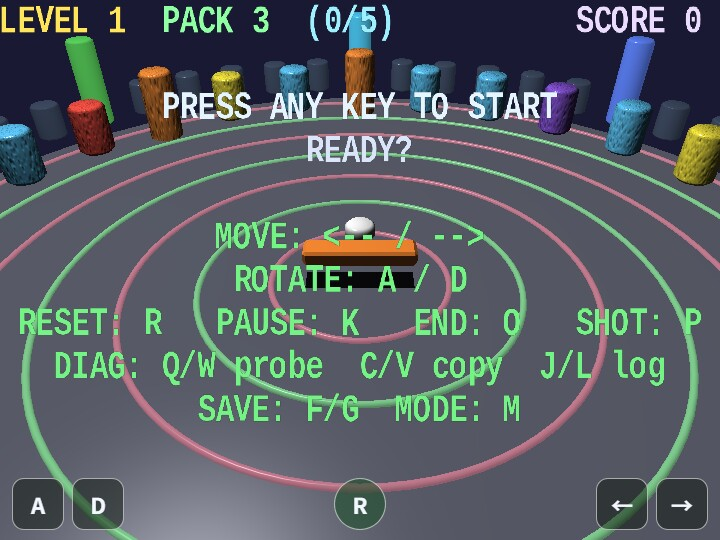

circular_breaker
English | 日本語

Overview
- This is an integrated 3D breakout sample that uses
webg's basic features together, including scene management, collision handling, HUD, and audio - It can be used as a reference implementation for game development patterns such as "reusing multiple
Shapeobjects", "updating nodes", and "reflecting input" - On both desktop and mobile, the canvas follows the full browser viewport
- On tall screens, the FOV is adjusted automatically so the field of view remains usable
- Short status displays during gameplay are gathered into the canvas HUD drawn by
drawHud(), narrowing the on-screen information to what is needed for game progression
How to Run
- Open ./circular_breaker.html
- Use a browser with WebGPU support, and check the help panel and HUD together with the sample when needed
webg Features Used
- Sample-side
GameStateManager: manages the top-level phasesintro / play / pause / stage-clear / result Space / Node: manages the game objectsShape: generates the floor, walls, blocks, paddle, and packsSmoothShader: shared standard material for drawing blocks both with and without normal mapsParticleEmitter: manages spark effects when blocks are destroyedTexture: generates procedural textures for blocksMessage: gameplay-specific HUD drawn fromdrawHud()Touch: fixed buttons← / → / A / D / RGameAudioSynth: plays BGM and sound effects from melody presets and the SE catalog
Implementation Flow
main.js initializes WebgApp, SmoothShader, and GameAudioSynth, creates the arena, blocks, paddle, pack, and particles, and then connects input, the game runtime, scene phases, and diagnostics. Per-frame game rules are kept out of main.js so its initialization and module wiring remain visible.
gameRuntime.js stores play-time state such as score, level, the remaining PACK count, and paddle and puck position and velocity. It updates paddle movement, puck reflection, block collision, and short recoil effects, while delegating stage decisions to stageFlow.js. stageFlow.js handles the time limit, target break count, score calculation, block reset, and game over, separating object movement from stage rules.
scenePhases.js uses GameStateManager to switch the top-level intro / play / pause / stage-clear / result states. It converts stage results into scene phases and chooses phase-specific BGM and notification sound effects. HUD drawing is in Hud.js, sparks are in particleEffects.js, and persistent high scores are in highScoreStore.js, so rendering, short effects, and saved data can be inspected independently of gameplay updates.
The frame flow converts input to actions, updates the scene phase, advances the game runtime according to that phase, draws the updated nodes, and then overlays particles and the HUD. Pause keeps the current frame while stopping gameplay updates. Result stops movement and collision while continuing the ending display and particle updates.
File Structure
main.js: connects WebgApp initialization, scene construction, input, the update/render loop, and diagnosticsconstants.js: shared arena dimensions, block counts, speeds, stage timing, and 2D math helpersarenaScene.js: creates the arena floor, walls, guide ring, and lightingshapeFactory.js: creates shared shapes such as beveled boxes and cylindersblockField.js: manages block textures, prototypes, instances, types, and stage resetsgameRuntime.js: updates paddle and puck movement, collisions, score, and play-time statestageFlow.js: evaluates the time limit, mission target, stage clear, score, and game overscenePhases.js: manages top-level phases and phase-specific audio throughGameStateManagerparticleEffects.js: creates and draws sparks when blocks are destroyedHud.js: formats gameplay and diagnostic state for the canvas HUDinputConfig.js: defines keyboard, touch, and debug action mappingshighScoreStore.js: saves the top five scores throughWebgApp.saveProgress()andloadProgress()
Checkpoints
- Confirm that the reflection direction of the pack is updated stably in response to paddle movement and rotation, verifying the basic quality of the collision-response logic
- Confirm that when the pack enters the positive local-Z side of
paddleNode, the remainingPACKcount decreases by 1 exactly once and does not keep decreasing while the pack remains in the area - Confirm that when
PACKreaches0, the game ends on that frame and the ending HUD shows the top five high scores - Confirm that destroying the green supply block (single-color
SmoothShaderpath without normals or texture) produces an effect that increases the remainingPACKcount by 1 - Confirm that score and progress display (
current count / target count) update immediately when blocks are destroyed, verifying that the gameplay HUD linked throughdrawHud()is correct - Confirm that SE and BGM are organized so they play according to the game state, including BGM presets, notification SE, and collision SE
Controls
ArrowLeft / ArrowRight: move the paddle along its long axisA / D: rotate the paddleR: reset the pack position during play, or restart the game after game overK: toggle pause on or offO: force game overP: save a screenshotQ / W: show diagnostics as text / JSON in the probe displayC / V: copy diagnostics as text / JSON to the clipboardJ / L: print diagnostics as text / JSON to the consoleF / G: save diagnostics as text / JSONM: switch between debug and release displayEnter / Space / click: start trigger while waiting to begin the stage- On smartphones (
coarse pointer), touch buttons← / → / A / D / Rare shown at the bottom of the screen - The smartphone UI does not show pause / debug / diagnostics buttons such as
K / O / P / Q / W / C / V / J / L / F / G / M